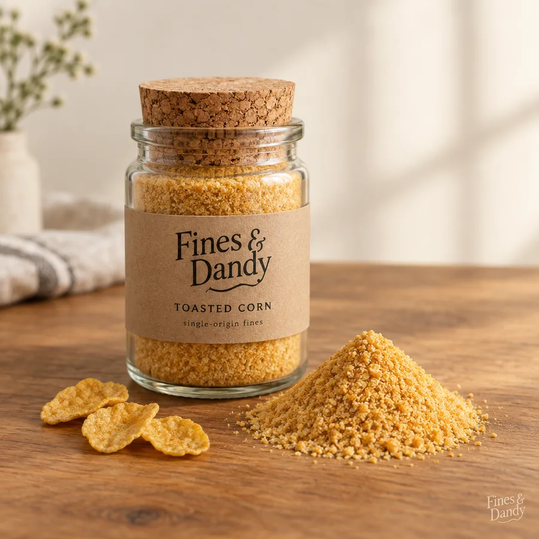
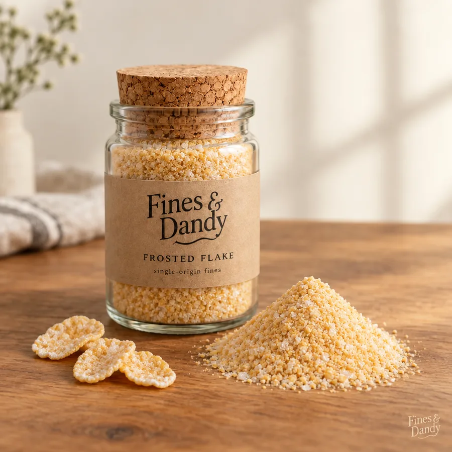
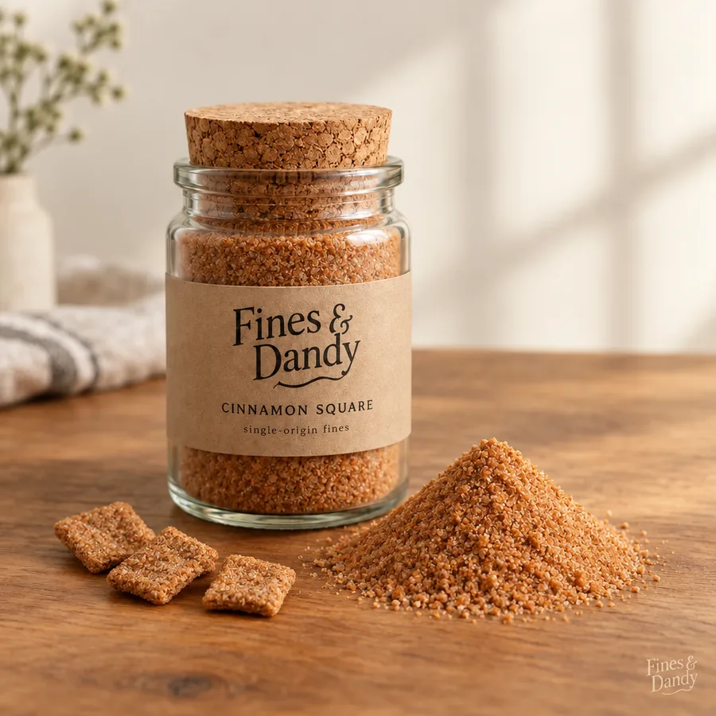
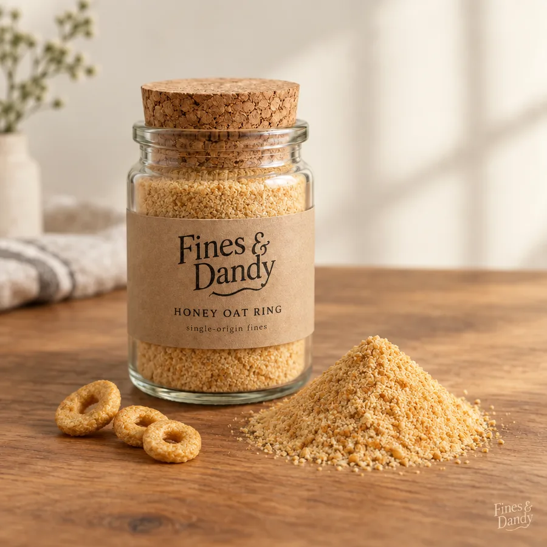
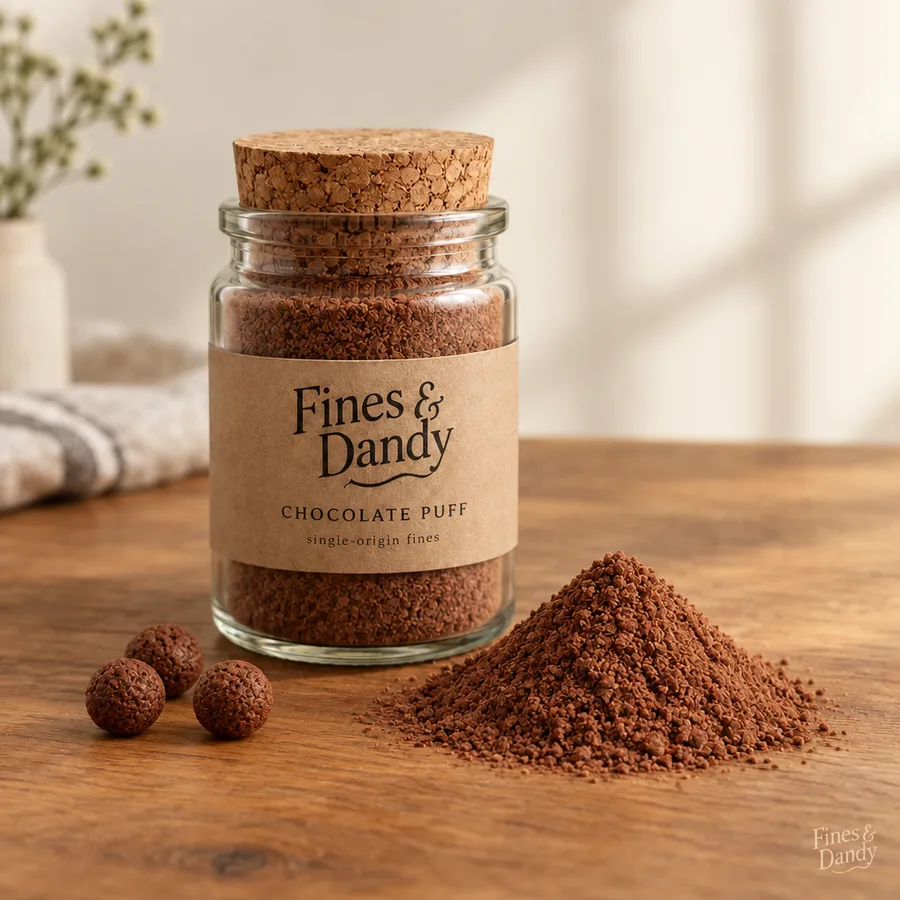
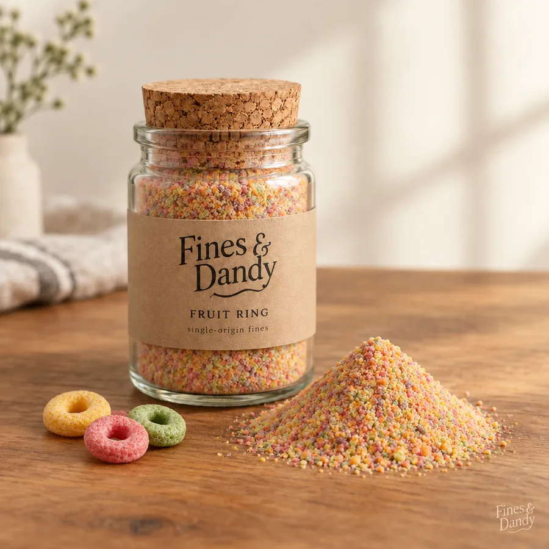

The Fines
Six single-origin varieties, never blended, each traceable to the parent cereal whose bag it settled in. Grind and settle data are recorded at jarring. All jars are 4 oz, which is more dust than you think.

Toasted Corn
"Forward notes of toasted corn, a lingering finish of bag."
Where the house style begins. Golden, mild, and endlessly settleable. If you have only tipped this into a sink, you owe it an apology.
- Grind
- Fine, with intent
- Settle
- Complete
- Origin
- Bottom 4% of bag
- Pairs with
- Cold whole milk

Frosted Flake
"Sugar frost up front, then more sugar, then a polite reminder of corn."
The frosting migrates downward in transit, which means this jar is sweeter than the cereal it came from. Physics did the recipe development.
- Grind
- Fine, glittering
- Settle
- Enthusiastic
- Origin
- Bottom 4% of bag
- Pairs with
- Dry, by the handful

Cinnamon Square
"Cinnamon sugar, warmth, and the quiet thrill of getting away with something."
The most requested dust in cereal, finally sold on its own terms. Demand outruns the settle rate, so jars are allocated. Please do not email us about the waitlist. Email us about the waitlist.
- Grind
- Fine to very fine
- Settle
- Immediate
- Origin
- Bottom 4% of bag
- Pairs with
- Vanilla yogurt

Honey Oat Ring
"Toasted oat, a whisper of honey, wholesome to a fault."
The gentle one. Recommended for households introducing fines to skeptical family members, or to anyone who describes food as "heart smart" without irony.
- Grind
- Fine, powdery
- Settle
- Patient
- Origin
- Bottom 4% of bag
- Pairs with
- Bananas, routine

Chocolate Puff
"Deep cocoa, malt, stains the milk on contact."
Our most active jar. In milk it behaves less like a topping and more like a weather event. The resulting chocolate milk is considered a second serving and is billed accordingly, by which we mean it is free.
- Grind
- Fine, assertive
- Settle
- Total
- Origin
- Bottom 4% of bag
- Pairs with
- Milk you intend to drink

Fruit Ring
"All five fruits at once, none of them identifiable, a heavy finish of pillowcase."
Technically single-origin, since every color settles from the same bag. The pink does most of the talking. The green is along for the ride.
- Grind
- Fine, festive
- Settle
- Colorful
- Origin
- Bottom 4% of bag
- Pairs with
- Being nine years old
A note on marshmallow fines
We are asked constantly. The answer is no, and the reason is science: marshmallows do not shed. They arrive at the bottom of the bag whole, smug, and intact. There is no marshmallow dust, there never has been, and we consider the matter closed. We have written to the manufacturers about this and will report back.